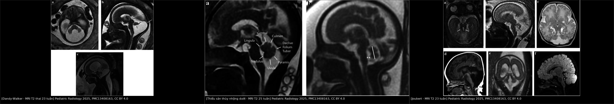
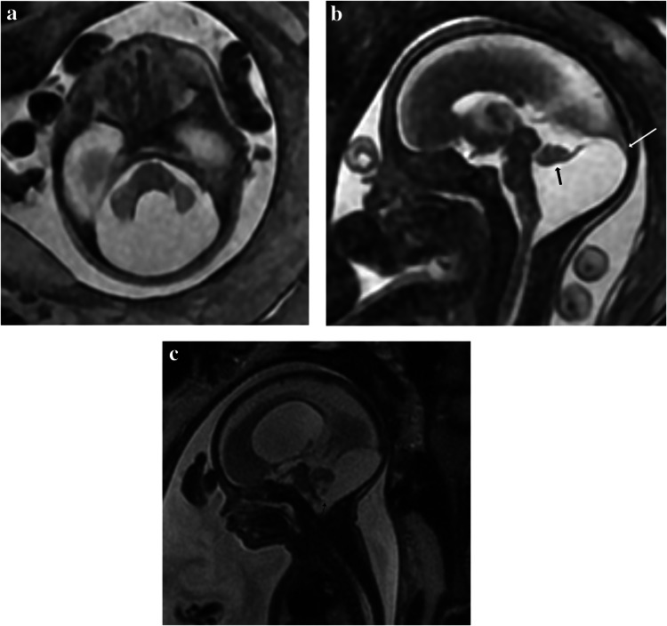
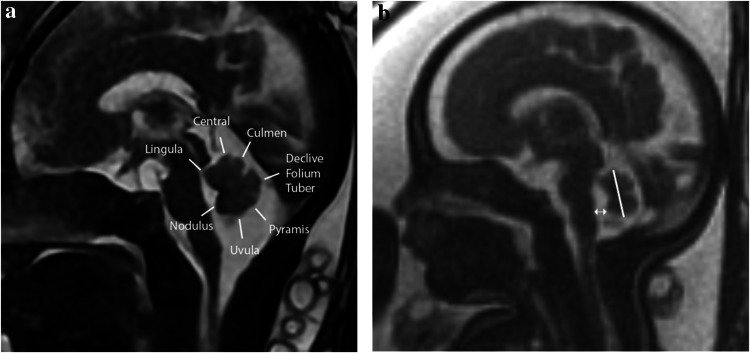
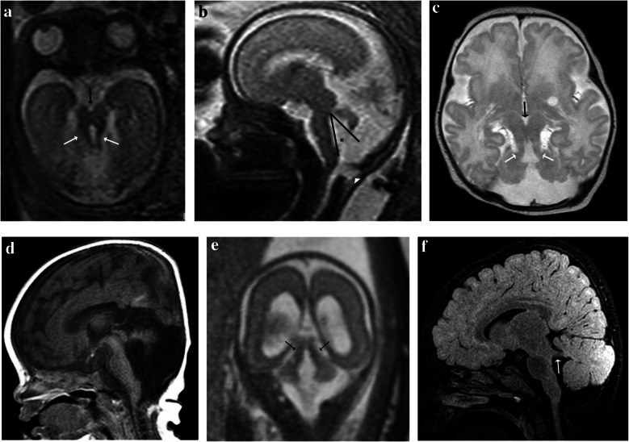

675 — Tư vấn tiền sản & MRI thai hố sau: thiểu sản cầu–tiểu não / Prenatal counseling & fetal MRI of the posterior fossa: pontocerebellar hypoplasia
Tags: pattern:thieu-san-tieu-nao pattern:bat-thuong-ho-sau vung:ho-sau vung:thai-nhi protocol:MRI-thai score:TCD score:tegmento-vermian-angle
Mức chắc chắn (certainty): tổng hợp y văn (literature synthesis) — tổng hợp bài tổng quan có ảnh CC BY của Pediatric Radiology 2025 về chẩn đoán hình ảnh hố sau thai nhi + đồng thuận di truyền – tư vấn; phần ca quiz là ca nguyên văn của bài gốc.
1. Tổng quan bệnh học – cơ chế hình ảnh
1.1 Vì sao hố sau thai nhi khó chẩn đoán?
- Tiểu não và cầu não phát triển kéo dài, tiếp tục sau sinh; nhiều dị tật chưa biểu hiện đủ khi thai còn nhỏ. Vì vậy không kết luận thiểu sản trước 18 tuần, và nhiều trường hợp cần MRI lặp lại muộn hơn hoặc MRI sau sinh.
- Hố sau chứa 3 nhóm bệnh cảnh chồng lấp: (1) bất thường dạng nang/dịch (cystic anomalies); (2) loạn sản/thiểu sản tiểu não (cerebellar hypoplasia/dysgenesis); (3) dị tật thân não (brainstem malformations). Cùng một “khoang dịch rộng” có thể là biến thể lành, nang Blake, Dandy-Walker hoặc teo tiểu não — cách xử trí và tiên lượng khác hẳn.
- Tiên lượng phụ thuộc 2 yếu tố: có bất thường kèm theo hay không (não trên lều, tim, thận, mắt) và loại dị tật. Với thể nang đơn độc không kèm bất thường, 90–95% trẻ phát triển thần kinh bình thường (mega cisterna magna, nang Blake); với Dandy-Walker, chỉ khoảng 50%.
1.2 TẠI SAO MRI thai dùng T2 nhanh, và các con số phải đo
- Chuỗi T2 nhanh (SSFSE/HASTE) là chuỗi chính vì dịch não tủy có T2 rất dài → sáng trắng, còn mô não thai chưa myelin hóa → giàu nước, T2 trung gian, tạo tương phản tự nhiên giữa nhu mô và khoang dịch. Thời gian thu ảnh ngắn (< 1 giây/lát) để “đóng băng” chuyển động thai, không cần an thần.
- T1 giúp phát hiện máu (methemoglobin sáng T1), vôi hóa và mỡ; DWI/EPI giúp phát hiện nhồi máu/thiếu máu cấp (khuếch tán hạn chế) — hữu ích khi nghi nhiễm trùng bào thai hoặc tổn thương mạch.
- Các số đo bắt buộc:
- Đường kính ngang tiểu não (transverse cerebellar diameter — TCD) so với bảng percentile theo tuổi thai. Ví dụ trong bài: thai 19 tuần 4/7, TCD 13,7 mm — dưới bách phân vị 1 (trung vị tuổi này 19,7 mm).
- Bể lớn (cisterna magna) đo đường trước–sau trên mặt phẳng ngang: bình thường < 10 mm**; **> 10 mm = mega cisterna magna (giãn bể lớn).
- Góc tegmento–thùy nhộng (tegmento-vermian angle): bình thường < 12° trước 24 tuần, < 8° sau 24 tuần.
- Khoảng cách thùy nhộng dưới (inferior vermian distance): bình thường < 4 mm.
- Tỷ lệ mô thùy nhộng trên/dưới đường fastigium–declive: bình thường khoảng 2:3; bất thường sau 20 tuần khi phần dưới ≤ phần trên.
- 7/9 thùy nhộng có thể nhận diện trên MRI 1,5 T từ tuần 22.
1.3 Từ hình ảnh đến cơ chế bệnh
- Dandy-Walker malformation (DWM — dị tật Dandy-Walker): hố sau to bất thường, lều tiểu não cao/torcula cao, thùy nhộng thiểu sản/không có, thùy nhộng xoay lên, não thất IV giãn, thông rộng với khoang dịch sau tiểu não. Phức hợp taenia–tela choroidea (TTCC) nằm thấp và ra ngoài (“down and out”).
- Persistent Blake pouch cyst (BPC — nang Blake tồn tại): màng mái não thất IV không thủng → nang chèn ép, thùy nhộng xoay lên, góc tegmento–thùy nhộng tăng, nhưng thùy nhộng và bán cầu tiểu não tạo hình bình thường; TTCC nằm cao và vào trong (“up and in”). > 50% tự thủng và thoái triển giữa 24–26 tuần.
- Mega cisterna magna (MCM — bể lớn khổng lồ): khoang dịch sau tiểu não > 10 mm, không có vỏ nang, không chèn ép, tiểu não và não thất IV bình thường; falx cerebelli có thể nhân đôi, không lệch.
- Cerebellar hypoplasia (thiểu sản tiểu não): tiểu não nhỏ hơn tuổi thai nhưng lều và TTCC bình thường, khoang dịch “trống” chứ không phải nang. Nguyên nhân nhiễm trùng bào thai (CMV), thuốc/độc chất (phenytoin, valproate, rượu), bất thường nhiễm sắc thể, rối loạn chuyển hóa, hội chứng di truyền.
- Pontocerebellar hypoplasia (PCH — thiểu sản cầu–tiểu não): bệnh thoái hóa thần kinh khởi phát từ bào thai, di truyền lặn nhiễm sắc thể thường, 19 type đã mô tả; cầu não + tiểu não thiểu sản, thùy nhộng thiếu/thiểu sản; trẻ chậm phát triển nặng, khó ăn, co giật, đầu nhỏ, giảm/ tăng trương lực. Có ca chưa mất thể tích rõ trước sinh → MRI sau sinh mới chẩn đoán.
- Joubert syndrome (JS — hội chứng Joubert): dấu “răng hàm” (molar tooth sign) trên mặt phẳng ngang trung não — bể liên cuống não sâu, cuống tiểu não trên dày và nằm ngang, eo cầu–trung não hẹp; kèm thiểu sản thùy nhộng, có thể màng não thoát vị chẩm. Do bệnh lông mao (ciliopathy), > 30 gen, di truyền lặn; tổn thương thận (nang), gan, võng mạc, coloboma, đa ngón; tiên lượng xấu, nguy cơ tái phát 25%.
- Kinked brainstem / L1CAM: thân não gấp khúc bất thường (“zig-zag”), não úng thủy do hẹp cống Sylvius, bất sản thể chai, ngón tay cái khép; di truyền liên kết X (L1CAM) — 50% con trai của mẹ mang gen bị bệnh.
2. Mẫu hình + chẩn đoán phân biệt theo vị trí (gamut)
- Mẫu hình gốc: siêu âm thai phát hiện khoang dịch sau tiểu não rộng, TCD nhỏ, thùy nhộng không thấy/không đều, hoặc não thất giãn → MRI thai để phân loại theo hình thái trội.
- Gamut theo hình thái trội:
- Khoang dịch sau tiểu não rộng, tiểu não bình thường: MCM (lành), BPC (có thể tự khỏi), nang nhện (arachnoid cyst) (chèn ép, vỏ rõ).
- Tiểu não nhỏ ± thùy nhộng thiếu: IIVH (isolated inferior vermian hypoplasia — thiểu sản thùy nhộng dưới đơn độc), thiểu sản bán cầu một bên (sau xuất huyết/nhiễm trùng), thiểu sản + loạn sản vỏ não (lissencephaly).
- Dị tật thân não: PCH, Joubert, kinked brainstem/L1CAM, DMJD (diencephalon–mesencephalon junction dysplasia — loạn sản giáp ranh gian não–trung não).
- Loạn sản tiểu não dạng nang: alpha-dystroglycanopathy (Walker-Warburg, muscle–eye–brain, Fukuyama), GPR56.
- Câu hỏi định hướng: (1) tiểu não có nhỏ thật không (TCD percentile)? (2) thùy nhộng có đủ và đúng vị trí không (góc, chiều cao)? (3) thân não có gấp khúc/cầu não dẹt không? (4) có bất thường trên lều/tạng kèm theo không? (5) tiền sử gia đình/nhiễm trùng/thuốc?
3. Bảng so sánh phân biệt (ma trận đối chiếu)
| Thực thể (entity) | Hình ảnh điển hình (US/MRI) | Chốt vào (rule-in) | Chốt loại (rule-out) | Gợi ý xác nhận |
|---|---|---|---|---|
| Mega cisterna magna | Khoang dịch sau tiểu não > 10 mm, không vỏ nang, không chèn ép; falx cerebelli nhân đôi, không lệch; tiểu não/não thất IV bình thường | > 10 mm + tiểu não bình thường + không chèn ép + không vỏ nang | Có vỏ nang/chèn ép/góc tăng → nghĩ BPC/nang nhện | MRI T2 3 mặt phẳng; đo AP; theo dõi |
| Persistent Blake pouch cyst | Thùy nhộng xoay lên, góc tegmento–thùy nhộng tăng, nang giữa; TTCC “up and in”; thùy nhộng tạo hình bình thường | Xoay thùy nhộng + TTCC cao/trong + thùy nhộng bình thường | Thùy nhộng thiểu sản thật/không có → nghĩ IIVH/DWM | MRI nhát giữa; lặp lại sau 24–26 tuần (tự khỏi > 50%) |
| Dandy-Walker malformation | Hố sau to, torcula cao, thùy nhộng thiểu sản/không có + xoay lên, não thất IV giãn, TTCC “down and out” | Hố sau to + thùy nhộng thiếu + não thất IV giãn + torcula cao | Thùy nhộng đủ, góc bình thường, không giãn não thất IV → không phải DWM | MRI nhát giữa; tìm bất thường kèm theo (tim ~25%) |
| IIVH (thiểu sản thùy nhộng dưới) | Thùy nhộng ngắn, góc tegmento–thùy nhộng tăng, khoảng cách thùy nhộng dưới > 4 mm, tỷ lệ trên/dưới bất thường sau 20 tuần | Thiếu mô thùy nhộng dưới + góc tăng + IVD > 4 mm | Thùy nhộng đủ 7/9 thùy, góc < 12°/< 8° → không phải IIVH | MRI nhát giữa; đo chiều cao/AP; MRI sau sinh |
| PCH | Cầu não dẹt + tiểu não nhỏ, thùy nhộng thiếu; có thể não thất giãn, thể chai mỏng/không có, trần não dày | Cầu não + tiểu não cùng thiểu sản + chậm phát triển nặng sau sinh | Cầu não bình thường, chỉ tiểu não nhỏ → nghĩ thiểu sản tiểu não đơn độc | MRI thai + sau sinh; exome/panel PCH; tư vấn lặn |
| Joubert syndrome | Dấu răng hàm: bể liên cuống sâu, cuống tiểu não trên dày/ngang, eo cầu–trung não hẹp; thiểu sản thùy nhộng; màng não thoát vị chẩm | Molar tooth sign + thiểu sản thùy nhộng | Không có dấu răng hàm → nghĩ PCH/IIVH | MRI nhát ngang trung não + nhát giữa; panel JSRD > 30 gen; khám thận/mắt |

Trái: Dandy-Walker — hố sau giãn, thùy nhộng thiếu, torcula cao. Giữa: thiểu sản thùy nhộng dưới — thùy nhộng ngắn, góc tegmento–thùy nhộng tăng. Phải: Joubert — dấu răng hàm + thiểu sản thùy nhộng. Nguồn: Pediatric Radiology 2025 (PMC13408163), CC BY 4.0. Ảnh ghép letterbox, không crop/kéo giãn.4. Protocol chụp + phân loại + tư vấn tiền sản
4.1 Protocol MRI thai hố sau
- Thời điểm: sau 18 tuần (tốt nhất 20–24 tuần); nếu hình ảnh chưa rõ, lặp lại muộn hơn (đặc biệt BPC có thể thay đổi sau 24–26 tuần). Không kết luận thiểu sản tiểu não/thùy nhộng trước 18 tuần.
- Máy: 1,5 T hoặc 3 T, không cần an thần; mẹ nằm nghiêng trái nhẹ để tránh chèn ép tĩnh mạch chủ.
- Chuỗi: T2 SSFSE/HASTE 3 mặt phẳng (ngang, đứng dọc, đứng ngang) lát 3–4 mm, FOV đủ rộng; T1 (máu/vôi), DWI/EPI (thiếu máu/nhiễm trùng); gadolinium chỉ khi thật cần (không dùng thường quy).
- Đo và ghi: TCD + percentile, đường kính trước–sau bể lớn, chiều cao/AP thùy nhộng, góc tegmento–thùy nhộng, khoảng cách thùy nhộng dưới, độ dày/cấu trúc cầu não, não thất, thể chai, vỏ não.
- Đánh giá toàn thân: tim, thận, mắt, chi, mặt; tiền sử gia đình, nhiễm trùng/thuốc.
- Di truyền: CMA (chromosomal microarray) trước, sau đó exome/panel (PCH, JSRD, L1CAM, alpha-dystroglycanopathy) tùy hình thái; tư vấn di truyền và nguy cơ tái phát (lặn 25%, L1CAM 50% ở con trai).
4.2 Phân tầng tiên lượng & tư vấn
- Nhóm thuận lợi: MCM hoặc BPC đơn độc, không bất thường kèm theo → 90–95% phát triển thần kinh bình thường; BPC có thể tự khỏi > 50% sau 24–26 tuần; theo dõi siêu âm/MRI, không can thiệp.
- Nhóm trung gian: IIVH đơn độc — tiên lượng thay đổi, cần MRI sau sinh và theo dõi phát triển; không mặc định lành.
- Nhóm nặng: DWM (chỉ ~50% phát triển bình thường; tìm tim bẩm sinh ~25%), PCH (chậm phát triển nặng, co giật, khó ăn), Joubert (đa cơ quan, tiên lượng xấu), L1CAM/kinked brainstem (não úng thủy, di chứng).
- Tư vấn: giải thích không chẩn đoán được trước 18 tuần, khả năng thay đổi theo tuổi thai, giá trị của MRI sau sinh, nguy cơ tái phát, lựa chọn theo dõi/chấm dứt thai kỳ theo luật địa phương, và kế hoạch sinh tại trung tâm có hồi sức nhi.
flowchart TD
A[Siêu âm: khoang dịch hố sau rộng / TCD nhỏ] --> B[MRI thai sau 18 tuần]
B --> C{Tiểu não và thùy nhộng bình thường?}
C -->|Có| D{Bể lớn > 10 mm, không vỏ nang?}
D -->|Có| E[Mega cisterna magna - theo dõi]
D -->|Không| F[Nang nhện / nang khác - theo dõi hoặc can thiệp sau sinh]
C -->|Không| G{Thùy nhộng xoay lên, TTCC up-and-in?}
G -->|Có| H[Blake pouch cyst - lặp MRI 24-26 tuần]
G -->|Không| I{Thùy nhộng thiếu + hố sau to + não thất IV giãn?}
I -->|Có| J[Dandy-Walker - tìm bất thường tim/tạng]
I -->|Không| K{Cầu não dẹt + tiểu não nhỏ?}
K -->|Có| L[PCH - exome, tư vấn lặn]
K -->|Không| M{Dấu răng hàm?}
M -->|Có| N[Joubert - panel JSRD, khám thận/mắt]
M -->|Không| O[IIVH / thiểu sản khác - MRI sau sinh]
5. Biến thể bình thường và cạm bẫy
- “Bể lớn rộng” không đồng nghĩa bệnh: MCM là biến thể lành; phải loại trừ vỏ nang, chèn ép, thùy nhộng xoay trước khi kết luận.
- BPC vs thiểu sản thùy nhộng: BPC xoay thùy nhộng nhưng không làm mất mô; đo chiều cao thùy nhộng và góc thay vì chỉ nhìn “khoang dịch rộng”. Lặp MRI sau 24–26 tuần vì BPC tự khỏi > 50%.
- Chẩn đoán quá sớm: trước 18 tuần tiểu não chưa tạo hình đủ; TCD thấp giả nếu đo sai mặt phẳng (không qua tiểu não/đồi thị) hoặc thai nằm xấu.
- Bỏ sót bất thường trên lều: DWM thường kèm bất sản thể chai, dị tật vỏ não, dị tật tim (~25%); luôn khảo sát toàn bộ não và tạng.
- PCH có thể “bình thường” trước sinh: bệnh thoái hóa tiến triển, mất thể tích có thể chỉ rõ sau sinh; nếu nghi ngờ, MRI sau sinh + exome, không loại trừ bằng MRI thai bình thường.
- Joubert dễ bị bỏ sót nếu chỉ đo thùy nhộng: phải nhìn mặt phẳng ngang trung não tìm dấu răng hàm; khám thận, mắt, đa ngón.
- Nhiễm trùng/thuốc: thiểu sản tiểu não mắc phải (CMV, phenytoin, valproate, rượu) không di truyền — hỏi kỹ tiền sử, xét nghiệm CMV khi nghi.
6. Tự lượng giá — Blind Quiz
Ca 1 — Thai 23 tuần, siêu âm thấy khoang dịch sau tiểu não rộng, không thấy thùy nhộng rõ.

- Câu hỏi: Mô tả 3 dấu hiệu chính trên MRI. Chẩn đoán và 2 phân biệt?
Bấm để hiện đáp án (findings + chẩn đoán)
- Dấu hiệu: (1) hố sau giãn rộng, khoang dịch lớn giữa hai bán cầu tiểu não thay cho thùy nhộng; (2) torcula/lều tiểu não cao; (3) thùy nhộng nhỏ, xoay lên, não thất IV giãn, thông với khoang dịch sau tiểu não; TTCC nằm thấp/ra ngoài.
- Chẩn đoán: Dandy-Walker malformation.
- Phân biệt: BPC (thùy nhộng tạo hình bình thường, TTCC “up and in”, có thể tự khỏi) và MCM (tiểu não bình thường, không vỏ nang, không chèn ép).
- Nguồn ảnh: Pediatric Radiology 2025, Fig. 4, PMCID PMC13408163, CC BY 4.0.
Ca 2 — Thai 25 tuần 2/7, MRI nhát giữa thấy thùy nhộng ngắn, góc tegmento–thùy nhộng tăng.

- Câu hỏi: Đo gì để chốt thiểu sản thùy nhộng dưới? Phân biệt với BPC thế nào?
Bấm để hiện đáp án (findings + chẩn đoán)
- Dấu hiệu: thùy nhộng ngắn, góc tegmento–thùy nhộng tăng, khoảng cách thùy nhộng dưới > 4 mm, tỷ lệ mô trên/dưới bất thường; 7/9 thùy nhộng nhận diện được ở thai bình thường từ 22 tuần.
- Chẩn đoán: thiểu sản thùy nhộng dưới đơn độc (IIVH).
- Phân biệt BPC: BPC xoay thùy nhộng lên nhưng không mất mô, TTCC cao/trong, và có thể tự khỏi > 50% sau 24–26 tuần → lặp MRI trước khi kết luận.
- Nguồn ảnh: Pediatric Radiology 2025, Fig. 6, PMCID PMC13408163, CC BY 4.0.
Ca 3 — Thai 23 tuần, MRI thấy cuống tiểu não trên dày, bể liên cuống sâu, thùy nhộng thiểu sản.

- Câu hỏi: Dấu hiệu đặc hiệu là gì? Cần khám thêm cơ quan nào và tư vấn di truyền ra sao?
Bấm để hiện đáp án (findings + chẩn đoán)
- Dấu hiệu: dấu răng hàm (molar tooth sign) — bể liên cuống não sâu, cuống tiểu não trên dày và nằm ngang, eo cầu–trung não hẹp; kèm thiểu sản thùy nhộng, có thể màng não thoát vị chẩm.
- Chẩn đoán: hội chứng Joubert (JSRD) — bệnh lông mao, > 30 gen, di truyền lặn.
- Khám thêm: thận (nang), gan, võng mạc/coloboma, đa ngón, hô hấp/thần kinh; tư vấn nguy cơ tái phát 25%, xét nghiệm panel JSRD cho thai và bố mẹ.
- Nguồn ảnh: Pediatric Radiology 2025, Fig. 13, PMCID PMC13408163, CC BY 4.0.
Bài liên quan chéo
- 655 – HIE sơ sinh & dị tật hố sau (Chiari/Dandy-Walker/bất sản thể chai)
- 657 – Dị tật hố sau khác: Joubert & rhombencephalosynapsis
- 659 – Thiểu sản cầu–tiểu não (PCH) & POLR3B
- 656 – Bất thường tủy–cột sống nhi
- 600 – Tổng quan Nhi khoa
Không dùng để chẩn đoán độc lập khi chưa có người hướng dẫn.